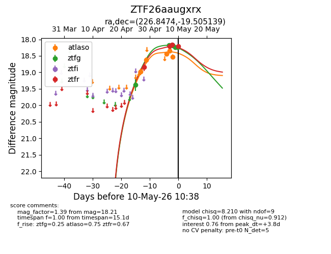
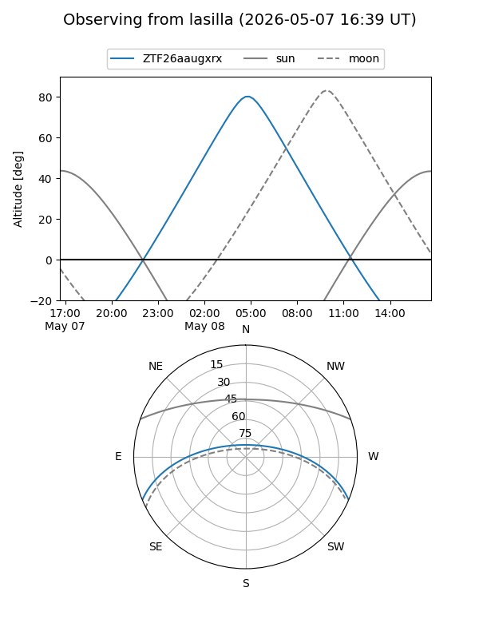
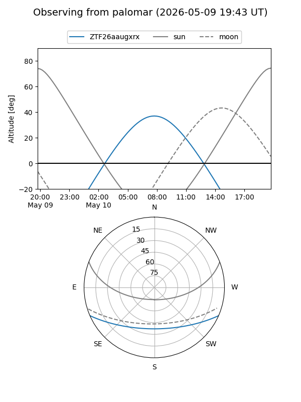
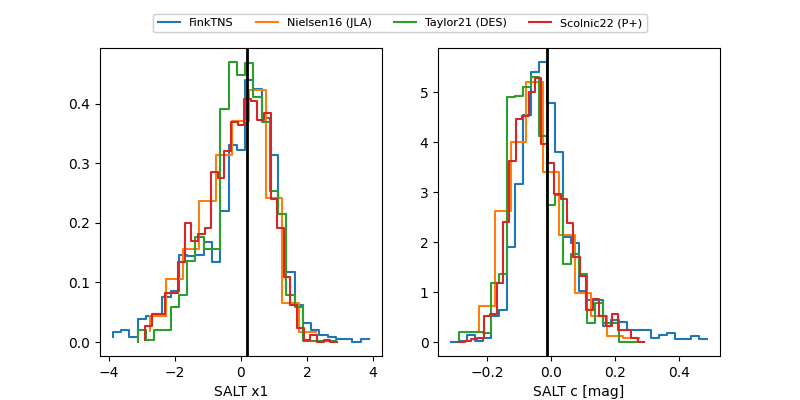

ZTF26aaugxrx
Target ZTF26aaugxrx at 2026-05-10 10:39
Aliases and brokers:
FINK: link
Lasair: link
ALeRCE: link
alt names
ZTF26aaugxrx (ztf,fink_ztf)
Coordinates:
equatorial (ra, dec) = 226.8474,-19.50514
equatorial (HMS+DMS) = 15:07:23.37,-19:30:18.50
galactic (l, b) = (341.8103,+32.91133)
Flags:
Photometry:
last atlaso=18.53, ztfg=18.24, ztfr=18.21
5 atlaso, 5 ztfg, 4 ztfr detections
Lightcurve

Visibility


Additional plots
